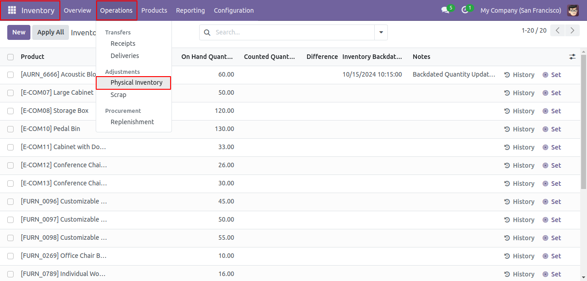
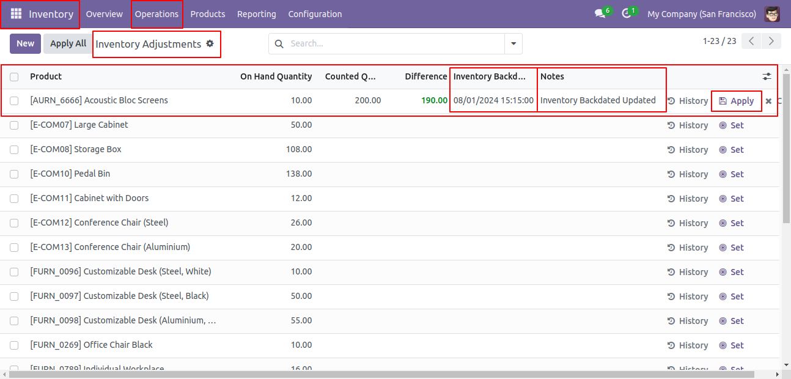
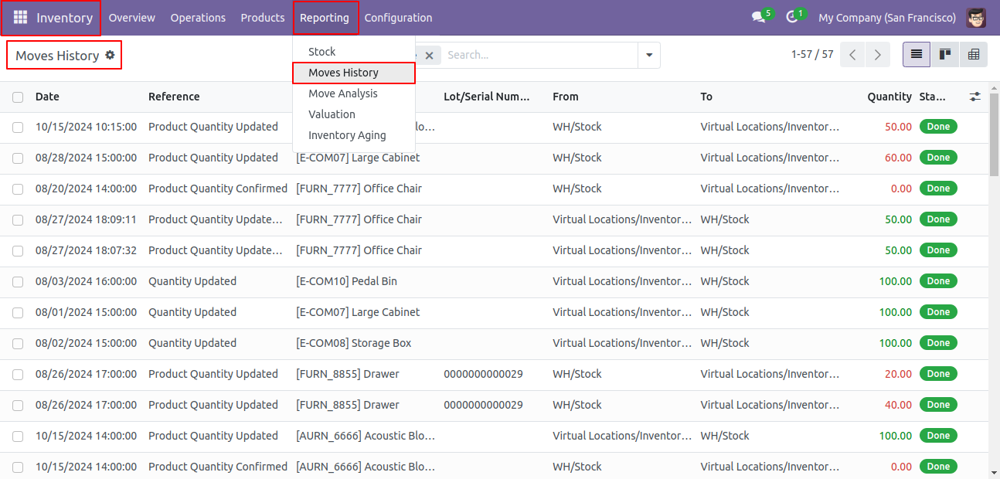
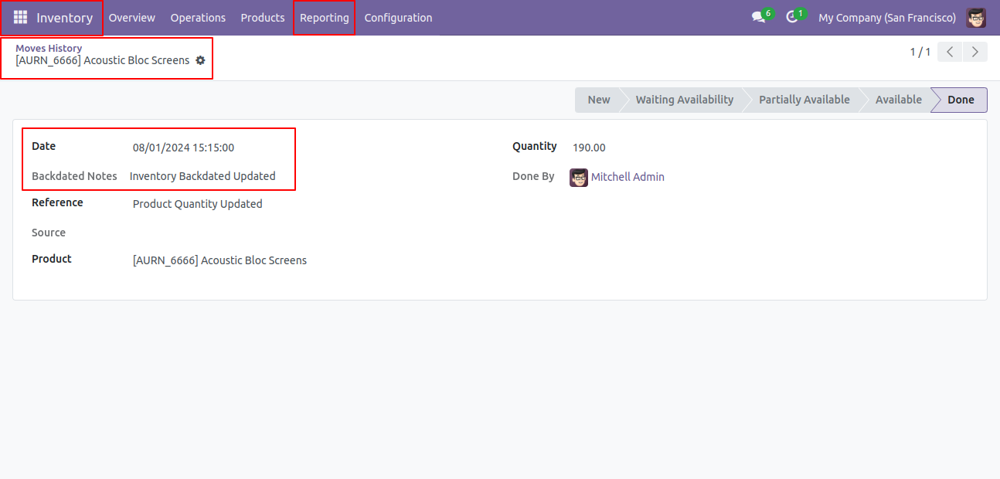
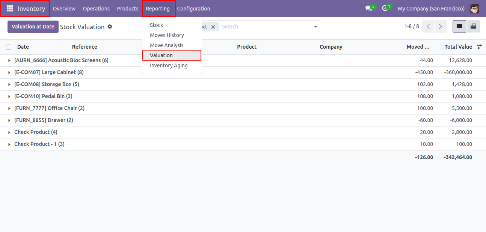
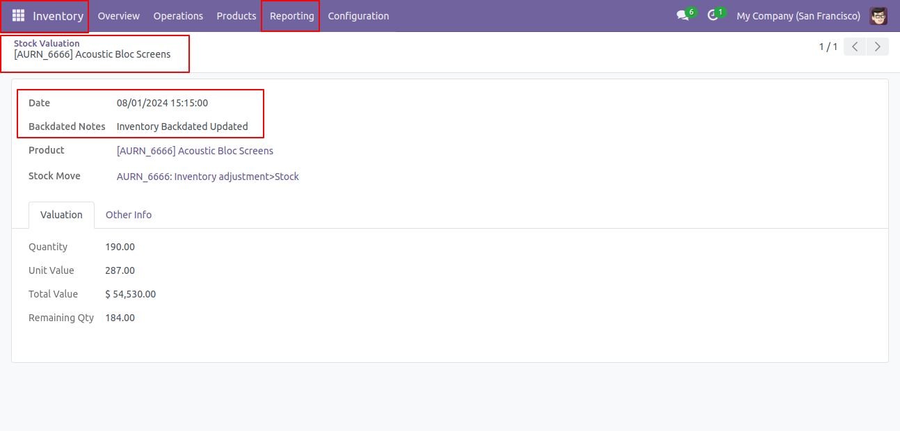
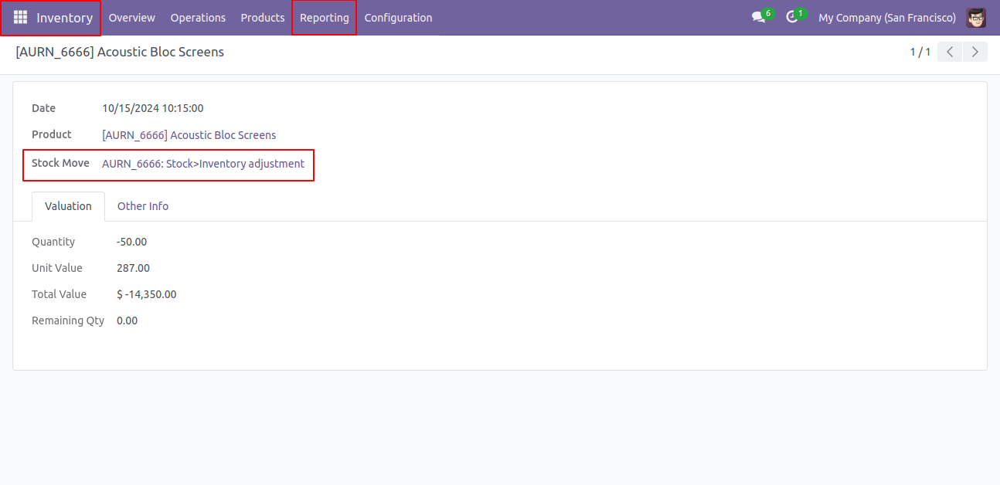
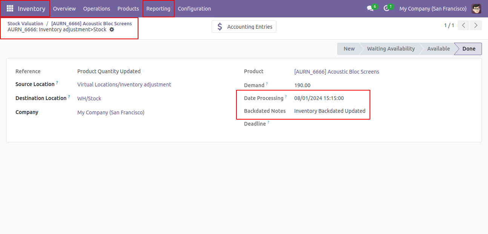
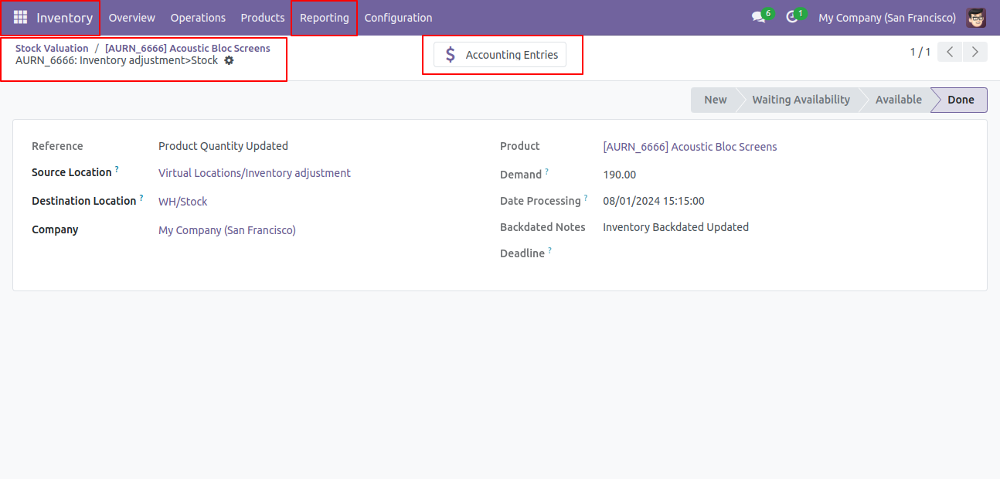
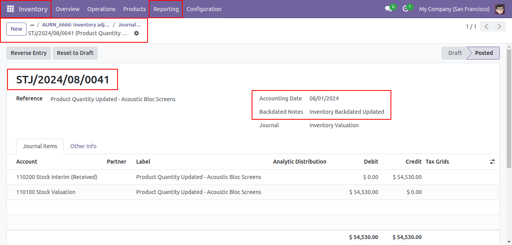

Odoo Inventory Adjustment Backdated Module
Manage and track backdated inventory corrections across your system
Inventory Adjustment Backdated
The Odoo Inventory Adjustment Backdated module allows businesses to make inventory adjustments for past dates, ensuring accurate records and consistent data across stock moves, product moves, valuations, and journal entries. It provides a clear audit trail and an easy-to-use interface for managing backdated changes efficiently. The module automatically updates related entries to align inventory and accounting records, supporting real-time valuation methods. It helps maintain transparency and compliance by tracking the history of all inventory adjustments.
With an intuitive interface, the module enables users to backdate adjustments and add notes, making inventory management more precise and efficient. This tool is ideal for businesses needing precise control over inventory data and corrections.
What is the purpose of inventory adjustment backdated?
Accurate Backdated Adjustments: Allows users to perform inventory adjustments for past dates, helping to maintain accurate inventory records that reflect the true state of stock levels, even when adjustments are made after the fact.
Seamless Integration Across Modules: Updates backdated information across various areas of Odoo, including product moves, stock moves, stock valuation layers, and related journal entries, ensuring consistency and comprehensive data tracking.
Enhanced Audit Trail: Provides a clear audit trail of all inventory adjustments, making it easier to track and review historical changes in inventory levels. This transparency aids in better understanding the history and reasons behind inventory adjustments over time.
Automated Journal Entries: Automatically updates the dates on journal entries for products with real-time valuation methods, ensuring financial records accurately reflect backdated inventory adjustments, and maintaining alignment between inventory and accounting.
User-Friendly Interface: Offers an intuitive interface for users to input backdated adjustments along with relevant notes, making it easy for stock managers to document and manage inventory changes efficiently.
Screenshots of Inventory Adjustment Backdated
To adjust inventory with a backdated operation, go to Inventory > Operations > Physical Inventory

From Inventory Adjustment, the user can create or update adjustments with backdated entries and add notes

To check applied inventory backdated and notes move history changes, go to Inventory > Reporting > Move History

Once the adjustment is validated, the inventory backdated, and the backdated notes are recorded in the move history as shown in the image below

To review the applied inventory backdates and note valuation changes, navigate to Inventory > Reporting > Valuation

Once the adjustment is validated, the inventory backdated, and the backdated notes are recorded in the valuation as shown in the image below

That valuation maintains stock move records, enabling navigation to check inventory backdated and backdated notes in the stock move record

Once the adjustment is validated, the inventory backdated, and the backdated notes are recorded in the stock move as shown in the image below

Both valuation and stock move maintains journal entry records, enabling navigation to check inventory backdated and backdated notes in the journal entry record

Once the adjustment is validated, the inventory backdated, and the backdated notes are recorded in the journal entry as shown in the image below, provided the product uses an automated valuation method.

Additionally, it includes an "Apply All" button to review all applied records, including backdated inventory and inventory notes